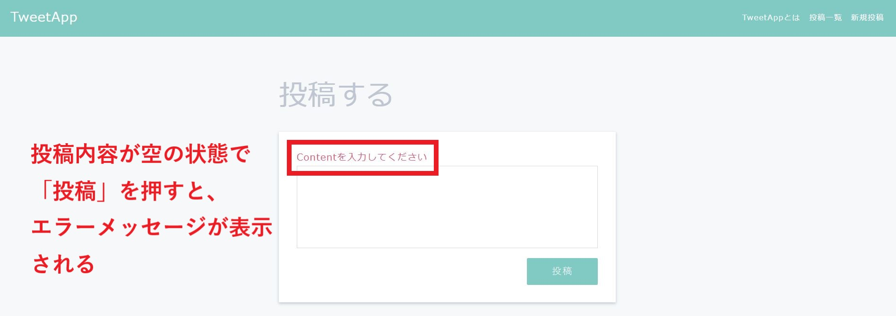
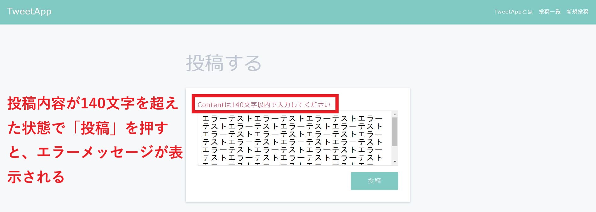
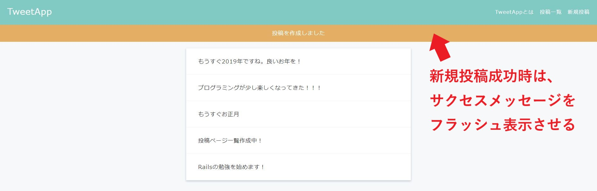
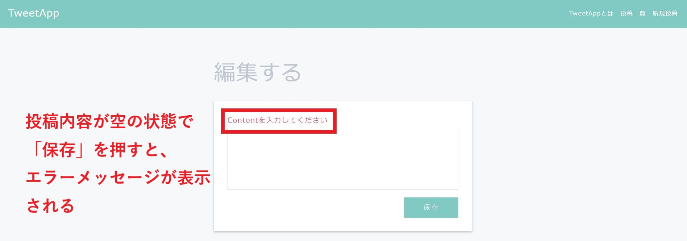
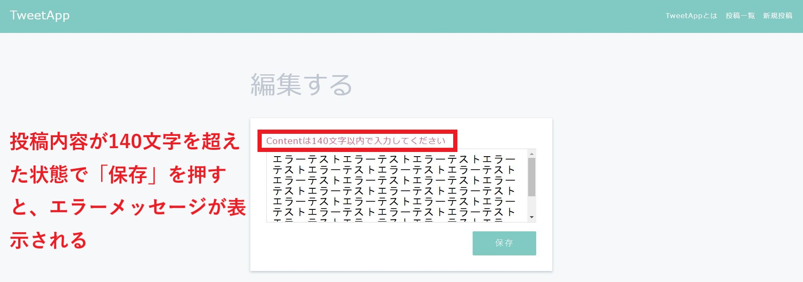
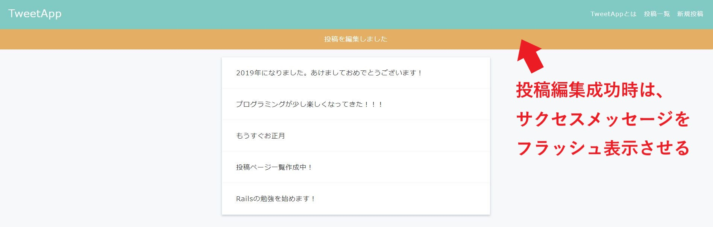
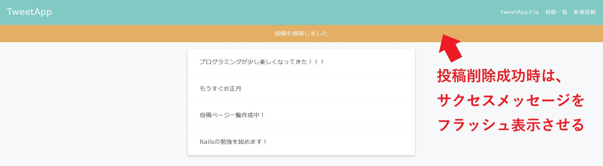

不正データ制限機能
制作イメージ
・想定外のデータが入力された際のチェックとして、不正データ制限機能を作成してください。
・正常に新規投稿、投稿編集、投稿削除が処理された際の、サクセスメッセージを作成してください。
1. 新規投稿
1-1. 空の投稿の場合

1-2. 140文字を超える投稿の場合

1-3. 新規投稿成功時

2. 投稿編集
2-1. 空の投稿の場合

2-2. 140文字を超える投稿の場合

2-3. 投稿編集成功時

3. 投稿削除成功時

【投稿失敗時】
◆Postモデルを修正し、新規投稿及び投稿編集時に下記どちらかに該当する場合は、投稿内容をデータベースに保存せずにエラーメッセージを表示するようにしてください。
・空の投稿の場合
・140文字を超える投稿の場合
◆application.html.erbに、flash[:notice]に代入されたメッセージを表示するHTMLを追加してください。クラス名は"flash"としてください。
◆英語（デフォルト）のエラーメッセージを日本語化し、下記の通り修正してください。
・空の投稿の場合：contentを入力してください
・140文字を超える投稿の場合：Contentは140文字以内で入力してください
◆renderメソッドを使用して、エラー投稿時は編集フォームに戻り、直前に編集していた投稿内容が表示されるようにしてください。
【投稿成功時】
◆flashメソッドを使用して、新規投稿及び投稿編集、投稿削除の成功時にサクセスメッセージを表示してください。ただし、サクセスメッセージは処理直後だけ表示（フラッシュ）して、それ以降は表示しないようにしてください。
◆new.html.erb、edit.html.erbに、エラーメッセージを表示するHTMLを追加してください。クラス名は"form-error"としてください。
◆サクセスメッセージは、下記の通りにしてください。
・新規投稿：投稿を作成しました
・投稿編集：投稿を編集しました
・投稿削除：投稿を削除しました